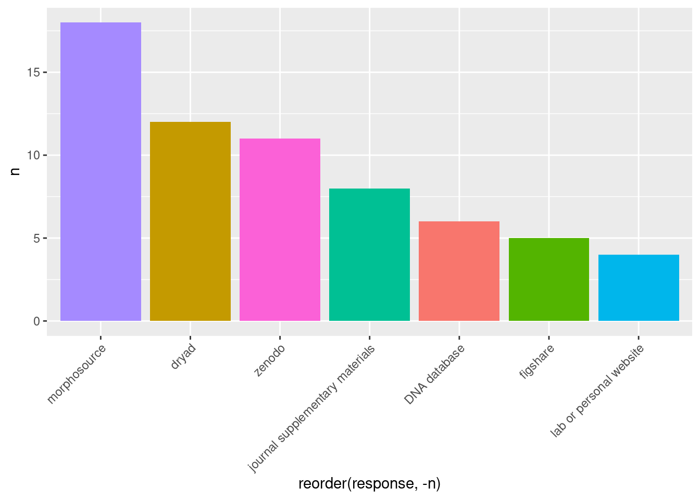
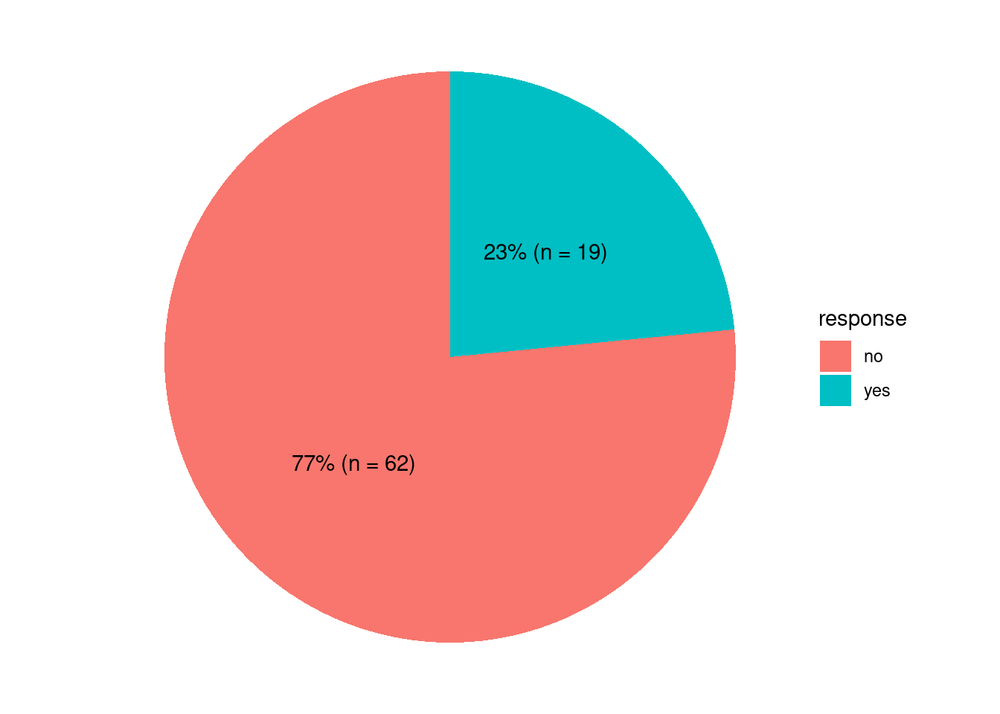
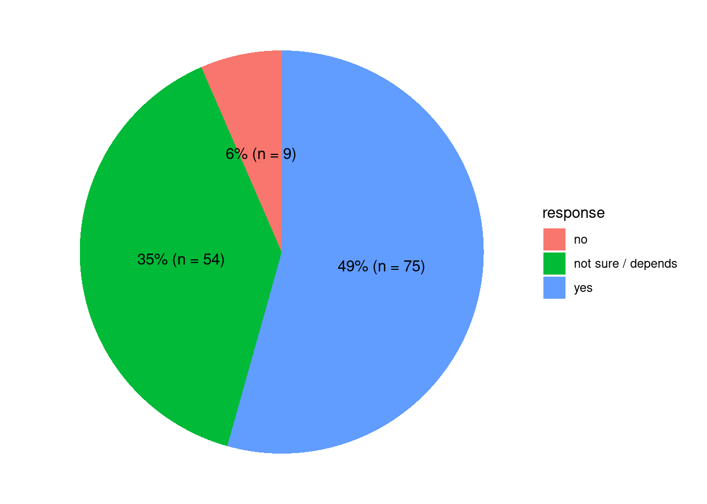
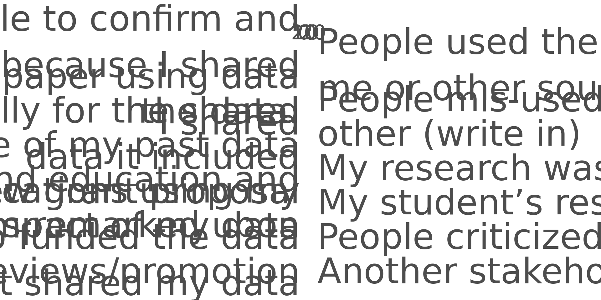

Code
read_csv("https://datadryad.org/stash/downloads/file_stream/1034350")Many of the perceived negatives of data sharing can be solved by implementing FAIR principles when sharing/publishing data.
Overall, the outcome of the survey suggests that the positives of sharing data outweigh negatives.
The data used in this analysis was generated in another study by Mulligan and colleagues (2022) and made available under a CC0 license. It was downloaded directly from the public repository (DRYAD): https://doi.org/10.5061/dryad.5x69p8d40
read_csv("https://datadryad.org/stash/downloads/file_stream/1034350")survey_questions |>
filter(number != "Q45",
number != "Q1",
str_detect(number, "TEXT", negate = T)) |> # remove consent questions
knitr::kable()| number | question |
|---|---|
| Q16 | Through which society, listserv or website did you access this survey? (choose one or more) - Selected Choice |
| Q2 | What is your field of expertise? (choose one or more) - Selected Choice |
| Q3 | What is your career stage or occupation? - Selected Choice |
| Q6 | Do identify as a member of a under-represented group or marginalized group? (optional) |
| Q7 | What aspects of your identity affiliate you with an under-represented or marginalized group? (optional) - Selected Choice |
| Q8 | Do at least one of the primary journals used by researchers in your field have a data accessibility requirement? In other words, does at least one require provision of data and/or data identifiers required to repeat the study or a statement of how the required data can be obtained? |
| Q9 | Do you publish in these journals - Selected Choice |
| Q10 | Have you benefited from other researchers sharing their data? |
| Q11 | How did you benefit? (choose one or more) - Selected Choice |
| Q12 | How did you get access to shared data? (choose one or more) - Selected Choice |
| Q13 | In your opinion, why have you been unable to benefit from data sharing by others? (choose one or more) - Selected Choice |
| Q14 | Have you archived and/or shared data using an online repository before? |
| Q15 | Please list all the online repositories you have used to archive or share your data (you can write names of multiple repositories in the space below) |
| Q17 | What was your motivation to archive and share data? (choose one or more) - Selected Choice |
| Q18 | What benefits have you experienced from sharing your own data? (choose one or more) - Selected Choice |
| Q19 | Have you ever experienced any kind of negative consequences of data archiving/sharing? |
| Q20 | What negative consequences did you experience? (choose one or more) - Selected Choice |
| Q21 | Why have you never archived/shared your data? (choose one or more) - Selected Choice |
| Q22 | Have you ever chosen not to archive/share a particular set of data from any of your published studies? |
| Q23 | What was your reason for choosing not to archive/share in this/these instance(s)? (choose one or more) - Selected Choice |
| Q48 | Optional: We are extremely interested in personal “success” stories of how shared data helped you or how sharing your own data lead to a possibly unexpected positive outcome for you or others. |
| Q43 | Optional: What challenges have limited your data sharing or archiving in the past? What would help you (and/or others) archive and shared data more effectively in the future? |
| Q24 | Do you agree with the following statement? “Scientists will experience a career-boosting net benefit by openly sharing their own data whenever possible” |
| Q25_1 | Which scientists are UNLIKELY to experience a net benefit from sharing their own data? Which scientists are LIKELY to experience a net benefit. - Early career scientists |
| Q25_2 | Which scientists are UNLIKELY to experience a net benefit from sharing their own data? Which scientists are LIKELY to experience a net benefit. - Mid-career scientists |
| Q25_3 | Which scientists are UNLIKELY to experience a net benefit from sharing their own data? Which scientists are LIKELY to experience a net benefit. - Senior scientists |
| Q25_4 | Which scientists are UNLIKELY to experience a net benefit from sharing their own data? Which scientists are LIKELY to experience a net benefit. - Scientists representing privileged groups |
| Q25_5 | Which scientists are UNLIKELY to experience a net benefit from sharing their own data? Which scientists are LIKELY to experience a net benefit. - Scientists representing under-represented or marginalized groups |
| Q25_6 | Which scientists are UNLIKELY to experience a net benefit from sharing their own data? Which scientists are LIKELY to experience a net benefit. - Scientists in first world countries |
| Q25_7 | Which scientists are UNLIKELY to experience a net benefit from sharing their own data? Which scientists are LIKELY to experience a net benefit. - Scientists in developing countries |
| Q25_8 | Which scientists are UNLIKELY to experience a net benefit from sharing their own data? Which scientists are LIKELY to experience a net benefit. - other (write in) |
| Q30_1 | For each group, indicate whether you believe they will experience a strong career benefit from access to data shared by others, medium benefit, or little to no benefit. - Early career scientists |
| Q30_2 | For each group, indicate whether you believe they will experience a strong career benefit from access to data shared by others, medium benefit, or little to no benefit. - Mid-career scientists |
| Q30_3 | For each group, indicate whether you believe they will experience a strong career benefit from access to data shared by others, medium benefit, or little to no benefit. - Senior scientists |
| Q30_4 | For each group, indicate whether you believe they will experience a strong career benefit from access to data shared by others, medium benefit, or little to no benefit. - Scientists representing privileged groups |
| Q30_5 | For each group, indicate whether you believe they will experience a strong career benefit from access to data shared by others, medium benefit, or little to no benefit. - Scientists representing under-represented or marginalized groups |
| Q30_6 | For each group, indicate whether you believe they will experience a strong career benefit from access to data shared by others, medium benefit, or little to no benefit. - Scientists in first world countries |
| Q30_7 | For each group, indicate whether you believe they will experience a strong career benefit from access to data shared by others, medium benefit, or little to no benefit. - Scientists in developing countries |
| Q30_8 | For each group, indicate whether you believe they will experience a strong career benefit from access to data shared by others, medium benefit, or little to no benefit. - other (write in) |
| Q31_1 | For each group, indicate whether you believe they have a large obligation to share their own data, a medium obligation or little to no obligation. - Early career scientists |
| Q31_2 | For each group, indicate whether you believe they have a large obligation to share their own data, a medium obligation or little to no obligation. - Mid-career scientists |
| Q31_3 | For each group, indicate whether you believe they have a large obligation to share their own data, a medium obligation or little to no obligation. - Senior scientists |
| Q31_4 | For each group, indicate whether you believe they have a large obligation to share their own data, a medium obligation or little to no obligation. - Scientists representing privileged groups |
| Q31_5 | For each group, indicate whether you believe they have a large obligation to share their own data, a medium obligation or little to no obligation. - Scientists representing under-represented or marginalized groups |
| Q31_6 | For each group, indicate whether you believe they have a large obligation to share their own data, a medium obligation or little to no obligation. - Scientists in first world countries |
| Q31_7 | For each group, indicate whether you believe they have a large obligation to share their own data, a medium obligation or little to no obligation. - Scientists in developing countries |
| Q31_8 | For each group, indicate whether you believe they have a large obligation to share their own data, a medium obligation or little to no obligation. - other (write in) |
| Q32 | Professional incentives for data sharing are increasing and will fuel more ubiquitous and meaningful data sharing as time goes on |
| Q33 | Better data sharing/transparency will help to democratize the ability of all scientists to contribute to scientific advances |
| Q34 | Better data sharing/transparency will help advance scientific knowledge more rapidly and efficiently than would otherwise be possible |
| Q35 | Stricter policies for data sharing must be enforced at all scholarly institutions, from journals to professional societies to universities to funding agencies. |
| Q42 | Journals and funding agencies should adopt stricter criteria that authors and researchers must meet to gain exceptions to data sharing requirements.(For instance, providing a letter from a museum stating that measurements/imagery cannot be archived or shared.) |
| Q36 | The concerns of all stakeholders (first authors, collaborators, thesis advisors, museums, descendant populations) about sharing a given dataset should be considered and respected. |
| Q37 | There needs to be more flexibility in data sharing requirements by open access journals due to ethical considerations of some datasets. |
| Q38 | The push for open access sharing of data is too strong and may lead to wide scale misuse of shared data. |
| Q39 | It is important to archive data using professional platforms even when there are restrictions on sharing in order to allow future verification of a study’s results. |
| Q40 | There are online repositories that allow data archiving without overly strict requirements for subsequent data sharing. |
| Q41 | When appropriate repositories are available, all individuals should archive their data in potentially accessible ways regardless of career stage. |
Data sharing, archiving, and publishing are terms that are often used interchangeably, but they describe three distinct practices. We consider sharing to be the transfer of data between researchers, e.g. collaborators. Archiving is storing the data in a trusted long-term storage location after a project is completed. Publishing is making the data available on a trusted repository. In the survey, these were not distinguished, so for the analysis, we we will also use them interchangeably.
80.794702% of respondents benefited from others sharing data with them.
Q10: Have you benefited from other researchers sharing their data?
paleoanth_long |>
filter(question == "Q10") |>
count(response) |>
knitr::kable()| response | n |
|---|---|
| No | 29 |
| Yes | 122 |
| NA | 3 |

FAIR \(\neq\) Open
The FAIR principles were developed as guiding principles for resonsible research data management and stewardship, and are not synonymous with the data being open.
Can the data be found and is their findability ensured for the future? This involves a persistent identifier (e.g., DOI) and searchable metadata (F). Can the data be accessed via open, standardised protocols (A)? Can another researcher in a similar field incorporate the data into their workflow, and will they understand the format and terminology? Can they even open the file without purchasing software (I)? Is it clear how the data are meant and allowed to be re-used? Data should be accompanied by detailed documentation and a license (R).
If data are stored/archived on institutional accounts or, worse, personal computers, there is an increased risk of data loss. Even if the data can be located, if the researcher who collected and analysed the data is no longer accessible, and the data and methodology were poorly documented, this may also result in data loss..
59.1836735% of respondents have previously published data in a repository.
repos <- paleoanth_long |>
filter(question == "Q15")Q14: Have you archived and/or shared data using an online repository before?
paleoanth_long |>
filter(question == "Q14") |>
count(response) |>
knitr::kable()| response | n |
|---|---|
| no | 60 |
| yes | 87 |
| NA | 7 |
Q15: Please list all the online repositories you have used to archive or share your data (you can write names of multiple repositories in the space below)
The top repositories include MorphoSource, DRYAD, Zenodo, and journal supplementary materials (Figure 1).
repos |>
separate_longer_delim(response, delim = ";") |>
count(response) |>
arrange(desc(n)) |>
slice_head(n = 8) |>
#repos_summ |>
remove_missing() |>
ggplot(aes(x = reorder(response, -n), y = n, fill = response)) +
geom_col() +
theme_minimal() +
theme_get() +
theme(legend.position = "none",
axis.text.x = element_text(angle = 45, hjust = 1))
Q12: How did you get access to shared data? (choose one or more) - Selected Choice
# how did you get access to shared data?
# Q12_1_TEXT (write-in repositories where they downloaded data)
paleoanth_long |>
filter(question == "Q12") |>
separate_longer_delim(response, delim = ",") |>
remove_missing() |>
count(response) |>
knitr::kable()| response | n |
|---|---|
| author sent me data directly | 85 |
| online repository (please write in names of repositories you have downloaded data from) | 81 |
| other (write in) | 15 |
The biggest problem with sending data to other researchers—by, for example, email—is that there are often no (clear) terms of re-use (e.g. a license).
Things to look for in a trusted repository:
Good
Bad
For a more complete overview, see re3data.
The items on the Bad list can of course be used in conjunction with a trusted repository to ensure maximum impact.
Being accessible is not synonymous with being open. It just means that there are clear policies on access to the data. ‘Available upon (reasonable) request’ is not a clear policy on access. Most certified repositories provide the following access options:
‘Data available upon (reasonable) request’

What exactly is a ‘reasonable’ request. How is it available? Who do I contact? In a recent study on data sharing, the most common reason for declining a request was found to be that, either the corresponding author had no time to look for the data, or the data were lost [@tedersooDataSharing2021]. Other obstacles include broken e-mails [@vinesAvailabilityResearch2014]. Often, institutional emails are used, but these are deactivated if a researcher leaves the institution.
Raw number of neutral experiences, (respondent that they had no negative experiences from sharing data): 62
Raw number of negative experiences: 19
Raw number of benefits: 55
Types of experiences
experiences <- paleoanth_long |>
filter(question == "Q20" |
question == "Q18" |
question == "Q19") |>
separate_longer_delim(response, delim = ",") |>
remove_missing() |>
select(question, response)
neg_count <- experiences |>
filter(question == "Q19") |>
count(response) |>
#group_by(response) |>
#rowwise() |>
mutate(percent = n / sum(n) * 100)
# negative statements
neg_experiences <- experiences |>
filter(question == "Q20") #|>
#count(response) |>
#arrange(desc(n))
# positive experiences
pos_experiences <- experiences |>
filter(question == "Q18") #|>
#count(response) |>
#arrange(desc(n))Q19: Have you ever experienced any kind of negative consequences of data archiving/sharing?
neg_count |>
ggplot(aes(x = "", y = n, fill = response)) +
geom_bar(stat = "identity") +
coord_polar(theta = "y") +
geom_text(aes(label = paste0(round(percent), "%", " (n = ", n, ")")), position = position_stack(vjust = 0.5)) +
theme_get() +
theme_void()
Q24: Do you agree with the following statement? “Scientists will experience a career-boosting net benefit by openly sharing their own data whenever possible”
paleoanth_long |>
filter(question == "Q24") |>
count(response) |>
mutate(percent = n / sum(n) * 100) |>
remove_missing() |>
ggplot(aes(x = "", y = n, fill = response)) +
geom_bar(stat = "identity") +
coord_polar(theta = "y") +
geom_text(aes(label = paste0(round(percent), "%", " (n = ", n, ")")), position = position_stack(vjust = 0.5)) +
theme_get() +
theme_void()
Q18: What benefits have you experienced from sharing your own data? (choose one or more) - Selected Choice
Q20: What negative consequences did you experience? (choose one or more) - Selected Choice
exp_theme <- theme(
panel.grid.major.y = element_blank(),
axis.text.y = element_text(family = "Roboto", size = 42, lineheight = 1.1),
axis.text.x = element_text(family = "Roboto", size = 24)
)
pos_experiences_pl <- pos_experiences |>
filter(str_detect(response, "(write in)", negate = T)) |>
count(response) |>
mutate(response = str_wrap(response, width = 50)) |>
ggplot(aes(x = n, y = reorder(response, n))) +
geom_col(fill = "#21927f") + # change to nicer hex colour
scale_fill_viridis_d() +
#scale_x_continuous(limits = c(0,28), position = "top") +
scale_x_reverse(position = "top") +
theme_minimal() +
exp_theme +
labs(y = "", x = "")
# combine some negative write ins to provide an additional value for y axis (symmetry)
neg_experiences_pl <- neg_experiences |>
#filter(str_detect(response, "(write in)", negate = T)) |>
count(response) |>
mutate(response = str_wrap(response, width = 50)) |>
ggplot(aes(x = n, y = reorder(response, n))) + # change to nicer hex colour
geom_col(fill = "#922134") +
scale_y_discrete(position = "right") +
scale_x_continuous(limits = c(0,28), position = "top") +
theme_minimal() +
exp_theme +
labs(y = "", x = "")
pos_experiences_pl + neg_experiences_pl
ggsave("figures/poster_benefits-negatives.png", height = 24, width = 48, units = "in")
Overall there are more often positive experiences associated with data sharing than negative experiences. More people have never had a bad experience (Figure 2). More people believe they will experience career benefits (Figure 3). And fewer people presented a bad experience from data sharing (Figure 4).
na.omit(paleoanth_responses$Q43) [1] "Ethics requirements for human remains, would need a secure location accessible to myself and stakeholders only with time/date restrictions and appropriate permissions"
[2] "Know where and how to do it."
[3] "needs: better search engine for and inside existing databases, put together multiple small data bases in one big, avoid paywalls, possibility to require several specimens at the same time"
[4] "The cost of repositories such as Dryad"
[5] "I have concerns about sharing landmark data due to interobserver error."
[6] "I think that data archiving/sharing should be strongly encouraged, but not required. There are certain cases where authors may still be working with data that required significant resources to obtain, and they should have the right to complete planned studies with that data before being required to publish all of it. This is particularly true of PhD theses. I am in favor of sharing data as much as possible, but there are also reasonable exceptions to when this should not be required."
[7] "I take back my previous answer that I haven't deposited data (but I can't go back on the survey)... I have put a morphological character matrix on morphobank.org. Challenges are always around access to fossil hominin data, even after they have been published."
[8] "official statements and rules"
[9] "I prefer to email my data. I would not deny access on the basis of who asks, but I think it only fair to be able to interact with the person who is benefitting from my hard work -- and for them to ask me permission so they acknowledge my effort."
[10] "See above. Digital data generated before there was an awareness of data sharing is sometime hard to resolve because the original stake holders and/or loan documents etc are often not accessible anymore"
[11] "I have shared/plan to share the entire dataset I have been using for publications. On the other hand, achieving data has been always limited by conflict of interest from other researchers."
[12] "I'm not sure. I don't really believe in giving away data for free. It is the currency of our profession and often took me years to collect, so I think people should be rewarded for that huge effort. I'm not interested in archiving for that reason-- I would prefer to work out agreements with individual researchers."
[13] "Museums often hold rights to share data, so it is often not up to me"
[14] "Local Aboriginal politics is a key issue, as is researchers using the data with out collaborating with Aboriginal descendant communities. This has been a key issue of concern for Aboriginal people with fossil and skeletal data as well as genomic data sets."
[15] "Easily-accessible, low-fee data archiving site with appropriate embargoes for human subjects data (i.e., must request permission and must demonstrate IRB approval)"
[16] "Large file sizes"
[17] "Data that I had shared was clearly taken and then published without mentioning its source"
[18] "Struggling to get the data into a user friendly format so that someone else could understand all the data fields, attributes, etc. VERY time-consuming. Financial support to hire an assistant (undergrad or better grad student) would help."
[19] "\"Data\" is a very general term. Situations may be very different."
[20] "Museum access permission sometimes does not allow sharing. GDPR makes sharing human data potentially very difficult."
[21] "Point out that If they don't share data, they are not a scientist, and don't belong in the field"
[22] "Institutional policies sometimes prevent easy data sharing. Acknowledged data access has no measureable impact"
[23] "I am struggling to get some important comparative data from some colleagues who have in the past promised to share their data but haven't done so for a while, thus resulting in a delayed publication and announcement of a new find."
[24] "We hope that mainstream anthropologists will be prepared to discuss and debate other theories of early hominid evolution rather than ignore, ridicule and dismiss new scientific evidence."
[25] "limited sustainability and missing option of providing meta data"
[26] "Often times, collection curators/managers, and indeed even institutions managing the collections themselves, have policies in place that require scientists to receive permission before sharing data. In other words, sometimes the question of data-sharing is not the individual scientist's question to answer."
[27] "The process if too obscure and it is unclear what the future of it will be."
[28] "My own data sharing (silo) system has excellent search capability which is not replicated in public sites I have examined, so functionality would be lost if I migrated data in Excel files, for example. Yet eventually my system will no longer be supported. I am sure others are in similar situations. How to resolve this?"
[29] "Knowing what data repositories are the best/easiest to use."
[30] "it must become a universal expectation, otherwise we are not doing science"
[31] "My own limited fluency in data types, internet protocols, and other technology issues limited my own ability to share and enjoy the sharing of others."
[32] "collaborators and advisors who consider data sharing as self-evident"
[33] "online repositories can sometimes be tedious to upload. When small files, I prefer directly as supplementary info"
[34] "reviewing standards are uneven - junk data"
[35] "I was offered co-authorship on a manuscript for donating some data (acquired via an agreement NOT to distribute the data). The others used the data and submitted a paper without my name on it, which caused some real problems (personal and professional) for me."
[36] "Technical infrastructure support to museums to curate and disseminate digital data"
attr(,"na.action")
[1] 1 4 5 6 8 11 13 14 15 16 18 19 20 21 22 23 25 26
[19] 27 29 30 32 34 35 36 37 38 39 40 42 43 44 46 47 48 50
[37] 51 52 53 55 56 57 58 59 61 62 64 66 67 68 69 71 72 74
[55] 77 78 80 81 83 84 85 87 88 89 90 91 92 93 94 95 96 97
[73] 98 99 100 102 104 105 106 110 112 113 114 116 117 118 119 121 122 123
[91] 124 125 126 127 128 129 130 131 132 135 137 138 139 140 141 142 143 144
[109] 145 146 147 148 149 150 151 152 153 154
attr(,"class")
[1] "omit"